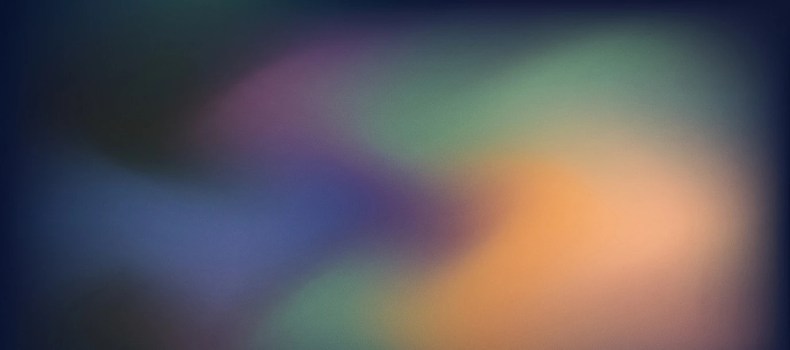
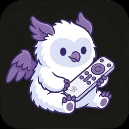

<
BUILDS
Agentic coding has empowered me to express my creativity in a new dimension. I owe much of the last 2 years of my life in particular to AI. Below is a selection of my “artwork”
-


TaTube
Letterboxd for TV (iOS app)